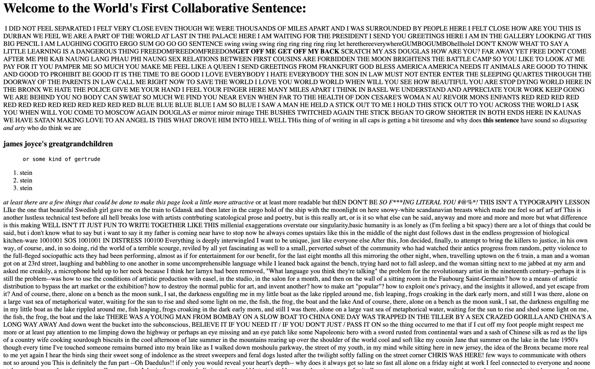
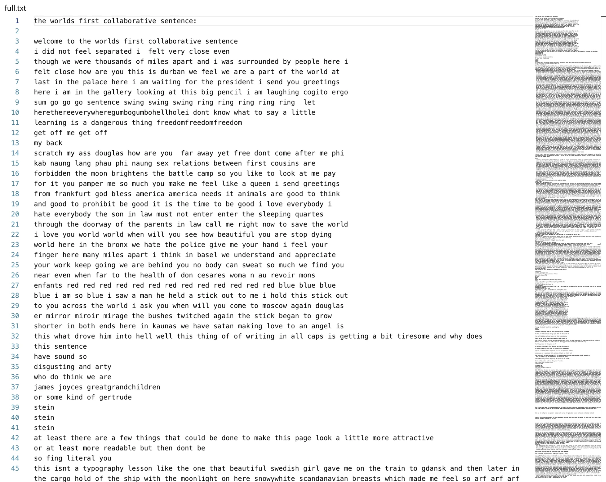
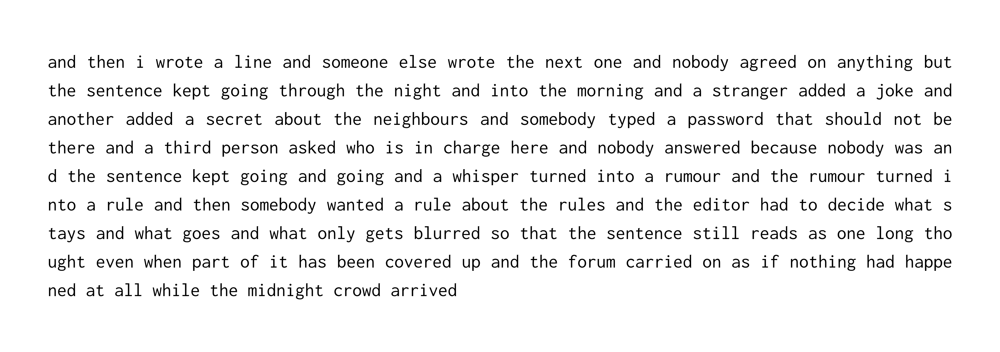
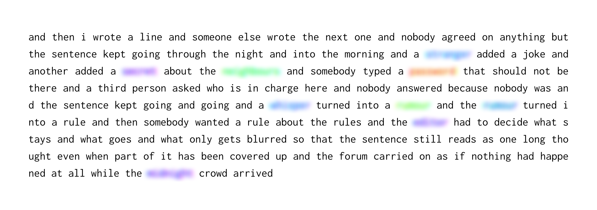
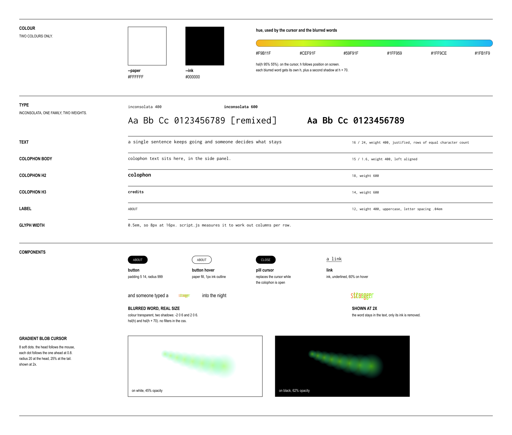

First Collaborative Sentence: Remixed
I scraped, edited and rebuilt a million-word web artwork as a website where the text does the work.
Brief
Douglas Davis's The World's First Collaborative Sentence is an archival web art piece held by the Whitney Museum of American Art: a single sentence of more than one million words. My brief: make it a readable website, using the role of the editor as a framework, with the text kept simple and free of derogatory words.
01Scrape
The source was an open forum before open forums had any regulation, far too long to read word by word.
Anyone could add to it, so it is a colourful mix of poetry, nonsense, confessions and jokes, with some problematic entries. Scraping it took a Python script and a whole lot of time. Deciding what to do with it was harder, so editing had to become a system.


02Edit
Banned words are blurred rather than removed, so the editor's hand stays visible.
The list mixed words I found myself with research into commonly banned words and ideas. Deleting them would have pretended the sentence was “cleaner” than it was. Blurring keeps it intact and shows a decision was made, and kept raising the project's real question: where curating ends and censorship begins, when one editor decides for many contributors.


03Design
One typeface and two colours, so the volume of text reads as a texture rather than a layout.
The type is set in Inconsolata, in two weights. A gradient through the text and a gradient cursor make a very long page feel alive without adding anything to read. I decided typography, interaction and rendering first, then built to them with agentic workflows.

04Scroll
The site scrolls itself at 40 pixels a second, because nobody was expected to read a million words by hand.
I optimised rendering so the whole sentence scrolls smoothly. At about six characters per word, roughly six million characters, scroll time depends mainly on screen width. The colophon and credits stay tucked away until opened, so the page stays a single stream of words.
| Screen | Columns per row | Time to scroll |
|---|---|---|
| 1920px wide | 230 | about 4h 21m |
| 1440px wide | 170 | about 5h 53m |
| 1280px wide | 150 | about 6h 40m |
| 390px phone | 42 | about 23h 49m |
Results
in the browser
What I learned
Editing is a design tool. Blurring a word keeps the decision, and the process, visible, which is more honest than deleting it and pretending the sentence came out clean.